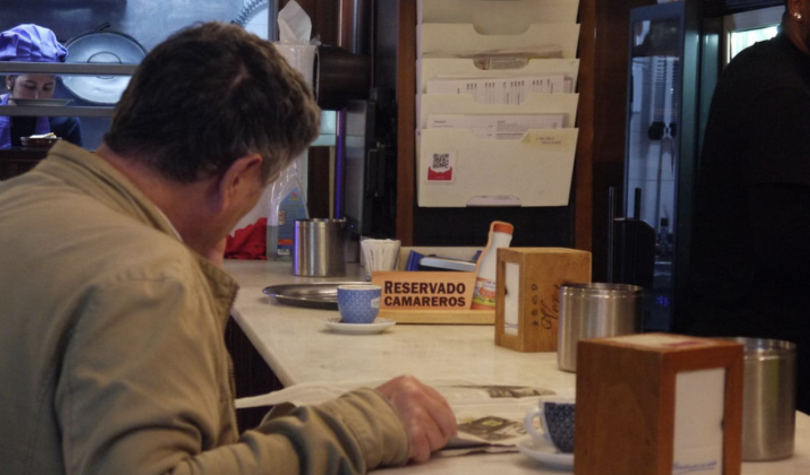

Nunha cidade onde a maioría dos habitantes son estudantes universitarios, está claro que non poden faltar bares e terrazas onde tomar algo cos teus amigos. Neste ámbito destacan dous nomes sobre o resto: La Tita e o Nariño.
En canto a La Tita podémola atopar na Rúa Nova, en pleno centro da cidade compostelá, moi cerca das Facultades de Historia e Filosofía e a poucos minutos do Campus Sur. Esta localización permítelle gozar dunha gran clientela, sobre todo estudantil, que ateigan a súa terraza, e máis coa chegada do bo tempo.
Tal é a numerosa clientela da que gozan e o seu éxito que tiveron que abrir outro local chamado La Otra Tita na Rúa das Orfas.
Pola súa parte ao Nariño atopámolo na Rúa Pelamios, moi preto das Facultades do Campus Norte e do Auditorio de Galicia.
Ademais de ofrecer a posibilidade de tomarse algo relaxado na súa terraza, este bar é famoso entre os composteláns pola súa tortilla, unha tortilla que moitos consideran non só a mellor de Santiago, senón tamén de Galicia, España ou mesmo do mundo segundo a quen lle preguntes.